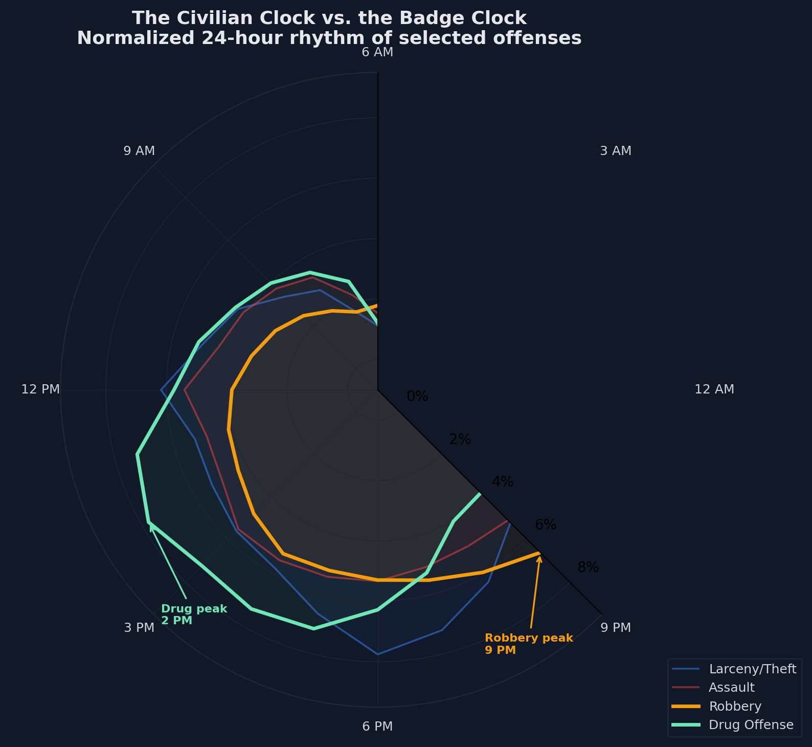

That quote should trouble anyone who relies on San Francisco's crime data. When police cracked down on daytime drug dealing in the Tenderloin, the CBS report suggests that at least part of the market shifted later into the night. But in the SFPD incident records, what shows up is a drop in afternoon drug offenses. To a reader scanning the statistics, it can look like progress. What changed most clearly in the data is the timing of recorded incidents.
This story uses over 1.7 million focus-crime incident records from 2003 to 2025, drawn from the public DataSF SFPD datasets. The data covers incidents reported to or recorded by police, not a complete count of crime. That distinction turns out to matter enormously. Through three visualizations, we trace how different crime types occupy different parts of the city, follow different clocks, and produce different fingerprints for each neighborhood, and how enforcement decisions can shape all three.
Focus crimes used in this analysis: Larceny/Theft, Assault, Burglary, Motor Vehicle Theft, Robbery, Vandalism, Drug Offense, and Fraud.
Start with Larceny/Theft selected. Blue dots blanket the city: Market Street, Union Square, SoMa, the residential west side. Larceny follows foot traffic. Where there are shops and parked cars, there is theft.
Now toggle to Drug Offense. The map transforms. Almost every dot snaps into a tight cluster covering a few dozen blocks in the Tenderloin. The rest of the city goes dark.
The numbers confirm what the eye sees. Relative to the citywide baseline, Drug Offense is over four times as prevalent in the Tenderloin, while Motor Vehicle Theft sits below one-third. This is not simply a "high crime" neighborhood. It is a neighborhood with a structurally different kind of recorded crime.
In 2020, UC Law San Francisco and Tenderloin residents filed a federal lawsuit arguing that the city treats the district as a de facto "containment zone" for open-air drug markets, tolerating conditions it would not allow in wealthier neighborhoods. The area houses the city's highest concentration of SRO (single-room occupancy) hotels and social services, drawing vulnerable populations into a built environment that lacks the retail and parking infrastructure generating theft elsewhere.
But the map shows where police recorded drug incidents, not necessarily where drugs are consumed. That distinction is what the opening quote is about. And it leads to the next question.

Look at Robbery (orange). It peaks around 9 PM, with a secondary bump near 2 AM: the hours when bars close, streets empty, and targets walk alone. This follows the Civilian Clock, the rhythm of daily life. Criminologists call this consistent with Routine Activity Theory (Cohen and Felson, 1979): crime happens when offenders meet targets without guardians present.
Now look at Drug Offense (green). It peaks around 2 PM and contracts to near-zero overnight. The drugs do not disappear at night. But the police officers who record them do go home.
Drug offenses are overwhelmingly proactive records. Unlike robbery, which victims report, drug incidents are generated when officers go looking: narcotics sweeps, buy-bust stings, task force patrols. These operations run on work schedules. The afternoon peak is not a crime clock. It is a Badge Clock.
The CBS report that opened this story provides suggestive evidence for that interpretation. When San Francisco's 2024 crackdown disrupted daytime dealing, reporting indicated that some activity shifted toward midnight. Recorded incidents appear to move with enforcement timing, not only with underlying behavior. The SFPD records also show Drug Offense counts declining steadily for years before COVID-19, while Larceny dropped sharply in 2020 when retail shut down, a clearer behavioral response. That pattern suggests changing enforcement priorities may explain part of the drug decline. Richardson, Schultz and Crawford (2019) warned about exactly this: when police records are shaped by strategy, they measure policing as much as they measure crime.
Press play. Two decades scroll by. The bubbles barely move.
The Tenderloin sits high on the vice/interpersonal side every year, while Southern and Northern sit furthest toward the property-heavy side. Richmond and Taraval hover near the origin. Even during COVID, when Larceny dropped 37% and Burglary surged over 50%, districts held roughly similar relative positions. The pandemic reshuffled the volume of crime, not its broad structure.
Each position reflects a neighborhood's built environment, its population, and the policing it receives. These stable positions act like district fingerprints.
Three things become visible when you stop averaging. Crime is geographically specialized: drug offenses cluster in the Tenderloin while larceny blankets commercial corridors. Different categories run on different clocks, and the afternoon drug peak, together with the 2024 enforcement shift and the pre-COVID decline, strongly suggests that drug data reflects policing patterns as much as criminal behavior. And each district's position in this property-vs-vice coordinate space is remarkably stable across two decades.
The man in the Tenderloin waiting until midnight for his next purchase does not show up in the afternoon statistics. That absence is not, by itself, evidence of progress. It is a reminder that crime data and crime are not the same thing.
Crime Data: SFPD Incident Reports via DataSF: Historical (2003 to May 2018) and Current (2018 to present). Datasets harmonized with unified crime and district names, joined at 2018-01-01, filtered to SF coordinates. Story analysis uses an eight-category focus-crime subset: Larceny/Theft, Assault, Burglary, Motor Vehicle Theft, Robbery, Vandalism, Drug Offense, and Fraud. The ecosystem explorer uses normalized district coordinates derived from a six-crime property-vs-vice subset, with bubble size encoding total share.
Tenderloin Context: UC Hastings College of the Law et al. v. City and County of San Francisco (2020). Settlement update. KQED, "Can SF Arrest Its Way Out?". Local News Matters, "Sick of Being Containment Zone" (2024). Central City SRO Collaborative. SF Planning, Tenderloin Investment Blueprint.
2024 Enforcement Shift: CBS News SF, "Drug crackdown producing results" (June 2024). Used here as contextual reporting, not as standalone causal proof.
Dirty Data: Richardson, R., Schultz, J. M. and Crawford, K. (2019). "Dirty Data, Bad Predictions." 94 N.Y.U. L. Rev. Online 15.
Routine Activity Theory: Cohen, L. E. and Felson, M. (1979). American Sociological Review, 44(4).
Tools: Python (Pandas, Plotly Express, Matplotlib). AI Declaration: AI tools was used for creating the webpage and for writing the code for the visualisations.